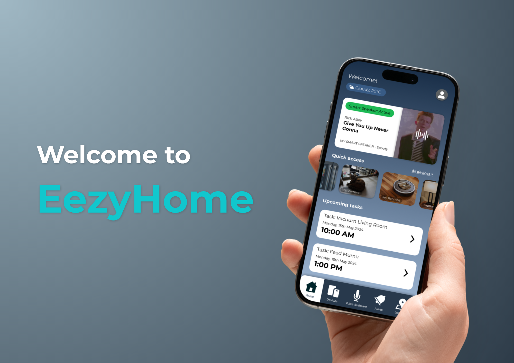

Academic project
EezyHome: Smart home management for tired minds
A concept app that helps busy people manage their devices and daily routines with minimal effort.
- Project type
- App concept
- My role
- Visual designer
- Timeline
- 4 weeks
- Tools
- Figma
Summary: Smart home apps ask a lot of people who are already facing heavy mental load. I designed the EezyHome app visuals and helped create the scheduling, floorplan and voice assistant features. The final design met WCAG 2.1 AA across all 8 screens.

The problem
- Exhaustion and conditions like ADHD often cause people to forget about routine chores.
- Inefficient network setups cause devices to go offline, higher energy costs and confusing troubleshooting.
The goal
- Let users automate their daily routine and get proactive alerts that trigger devices without mental strain.
- Present insights to users such as live connection status, usage statistics and a floorplan which suggests improvements to the home network.
Insights & decisions
Routine management is draining
Finding: Tracking chores mentally felt exhausting after a long workday.
Decision: A scheduling screen with an “Upcoming Tasks” section, so users can glance at scheduled tasks.
Home network setups can be confusing
Finding: Users did not know why devices went offline or where the signal dropped.
Decision: A live 2D floorplan with distinct colored markers, so active and offline devices are easy to spot.
Touch-heavy navigation excludes some groups
Finding: Motor impairment or fatigue makes lots of tapping frustrating.
Decision: “Homie”, a voice assistant with live audio wave feedback for hands-free control.
Key features
Live interactive floorplan
Map markers show where each device is and its activity status.
Homie voice assistant
Confirms each action out loud, such as “Setting a timer for 30 minutes for the Roomba”.
Schedule settings and task alerts
Date and time selectors only offer valid times, paired with an Upcoming Tasks section.
The results
A fully interactive prototype of the app, complete with animations to present key functions was submitted. All screens met the four WCAG pillars: Perceivable, Operable, Understandable and Robust, and the group scored an overall High Distinction (HD) grade on this assignment.
What I learned
- Designing for neurodiversity and physical fatigue takes both strict interaction constraints and more than one way to interact, in this case voice and visuals together.
- Adding tooltips to icons can drastically improve navigation for first time users as they can better understand the function of each click on the app.